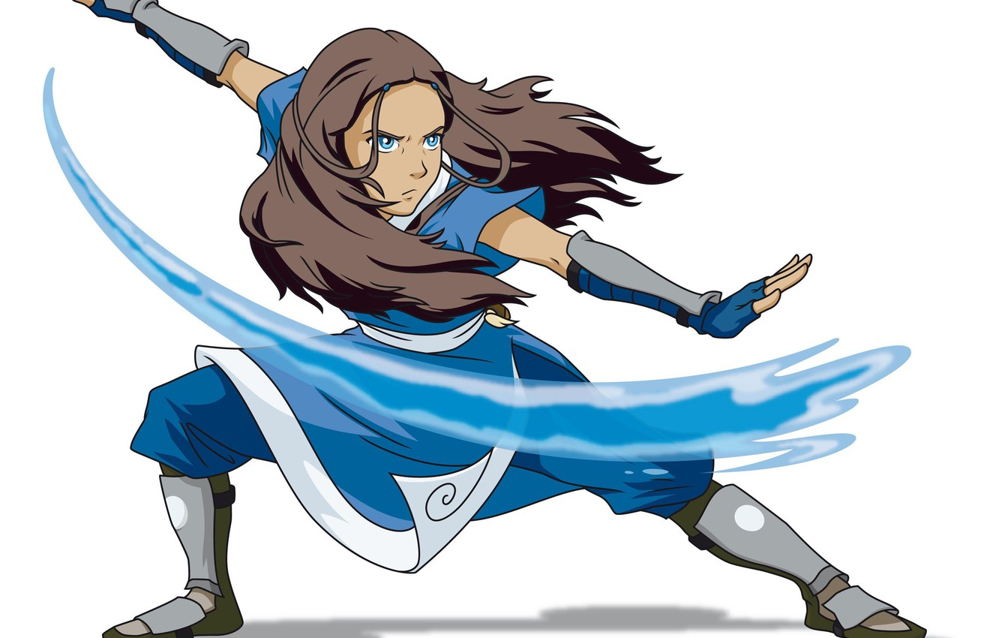
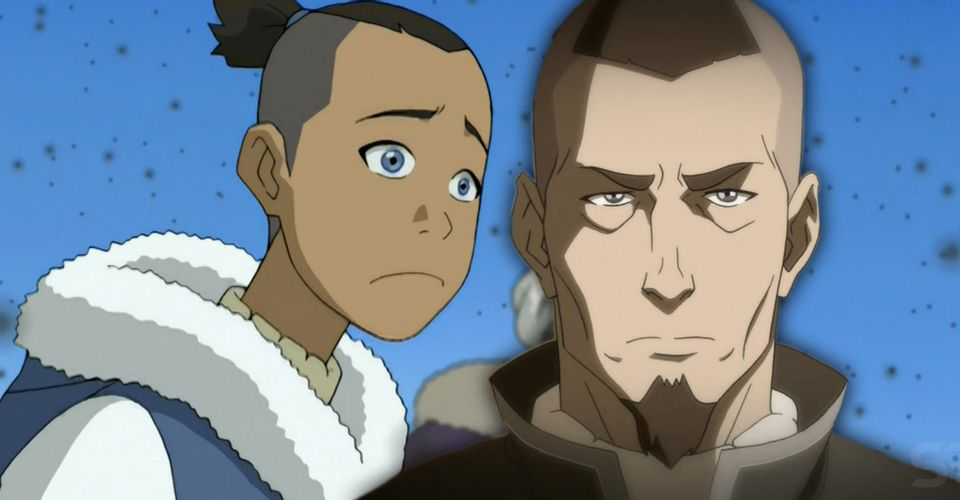
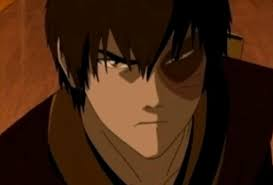

Aang. The Avatar
Aang is the only remaining member of the Air Nomad nation that was freed by the Fire Nation in AD 0. He is an Avatar - a person who uses all four types of magic: air, water, earth and fire. It was for the purpose of obtaining it that the Fire Nation attacked the peaceful monks. Aang escaped from his tutors, who did not expect events, but was frozen in an iceberg in case of a possible century ago. All this time the world was at war. After awakening, Aang must fulfill his mission: master all kinds of magic and return the world.
Katara
Katara is the daughter of the leader of the Southern Water Tribe of Hakoda and the only waterbender at the South Pole. She has an older brother, Sokka. Their mother died after one of the Fire Nation's attacks while protecting her daughter. When all the adult males of the Tribe went to war, including their father, Katara and Sokka took over running the village and providing food for its inhabitants. One day, while fishing, they discovered an ice sphere with a boy imprisoned inside, who turned out to be the Avatar and dramatically changed the girl's life.
Sokka
Sokka is a member of the Avatar team and the son of the leader of the Southern Water Tribe, Hakoda, and his wife, Kaya. He lived with his grandmother Kanna and younger sister Katara before they met Aang. When he was 8 years old, the Southern invaders came to his tribe, and in this battle he lost his mother. Later, Hakoda makes a difficult choice and, along with other warriors, goes to war against the Fire Nation, leaving his son in charge. He took on the responsibility of protecting the tribe. When he and his sister discovered the airbender, Sokka at first did not trust him, believing that Aang was a spy for the Fire Nation, but then they became best friends.

Tof Beyfong
Toph Beifong is the only child of Lao and Poppy Beifong. Her parents are some of the richest people in the Earth Kingdom. Toph was born blind and from childhood she was surrounded by constant care and attention. However, excessive guardianship disgusted the independent character of the girl. Toph found herself in the magic of the earth and, thanks to her, learned to see the world around her. Having met with Aang, she decided to take a desperate step and ran away from home to teach the Avatar earthbending.
Zuko
Zuko is the Prince of the Fire Nation, the son of the Fire Lord Ozai and his wife Ursa. He is easily recognizable by the burn scar on the left side of his face, which he received from his father for refusing to fight during their Agni Kai. For such unworthy behavior, Zuko was banished from the land of Fire until he finds the Avatar, who has not been seen for 100 years. On this journey, he found not only new friends, but also himself.